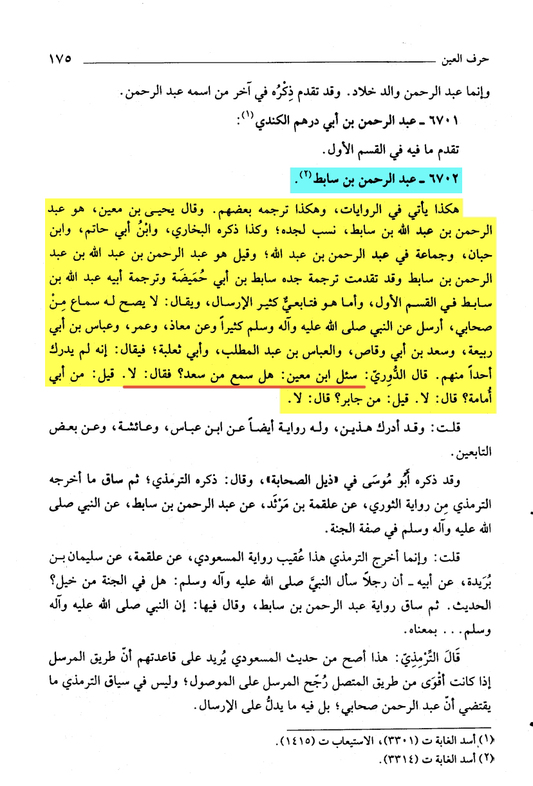

Al-Nawawi may Allah have mercy on him in his Sharh of this hadith says that the statement of Mu’awiya is not
a command for Sa’ad to insult him (i.e Ali) however he was asking him why he refrained from doing such
https://sunnah.com/muslim:2404d
Al-Qurtubi also said that whatever has been narrated about this (Mu’awiya cursing Ali) are lies and not true
in the part of the narration where it says أمر معاوية بن أبي سفيان سعدًا
Its an addition by Hatim b. Ismael
He is Saduq but has illusions as mentioned by Ibn Hajar
Here is a different chain of this hadith in Sunan Al-Kubra hadith number 8385 without Hatim B. Ismael
in the chain and it does not mention that part where Muawiya commanded him to curse.
Which clearly shows that its an addition by Hatim B. Ismail
https://sunnah.com/ibnmajah:121
In this narration Sunan Ibn Majah 121 ‘Abd Al-Rahman B. Sabit narrates from the noble
companion Sa’ad B. Abi Waqqas رضي الله عنه

Here in Al-Isaba Volume 5 and page 175 by Ibn Hajar, on the biography of ‘Abd Al-Rahman B. Sabit,
Ibn Ma’en was asked if ‘Abd Al-Rahman B. Sabit ever heard from Sa’ad B. Abi Waqqas, he replied no.
which makes this report (Sunan Ibn majah 121) disconnected mursal weakkk
Musanaff Ibn Abi Shaybah, volume 18, pages 58 & 59, tahqeeq by Shaykh Sa’ad Bin Nasir Al-Shatri حفظه الله
he says in the footnotes that the narration (Sunan Ibn majah 121) is munqati’ and Ibn Sabit didnt hear
from saa’ad Bin abi Waqqas رضي الله عنه